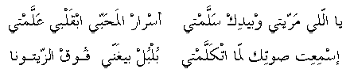

yally marreity o beidik sallamty
asraar il-maHabby ibqalby 'allamty
ismi'it Sootik lamma itkallamty
bulbul beyghanny fooq el-zaytoona
O, you who passed by and waved with the hand
You marked the secrets of love in my heart
I heard your voice when you talked
Like a bird singing on top of an olive tree
Go
back to Palestinian Songs Page
Go back
to Palestinian Folklore Page